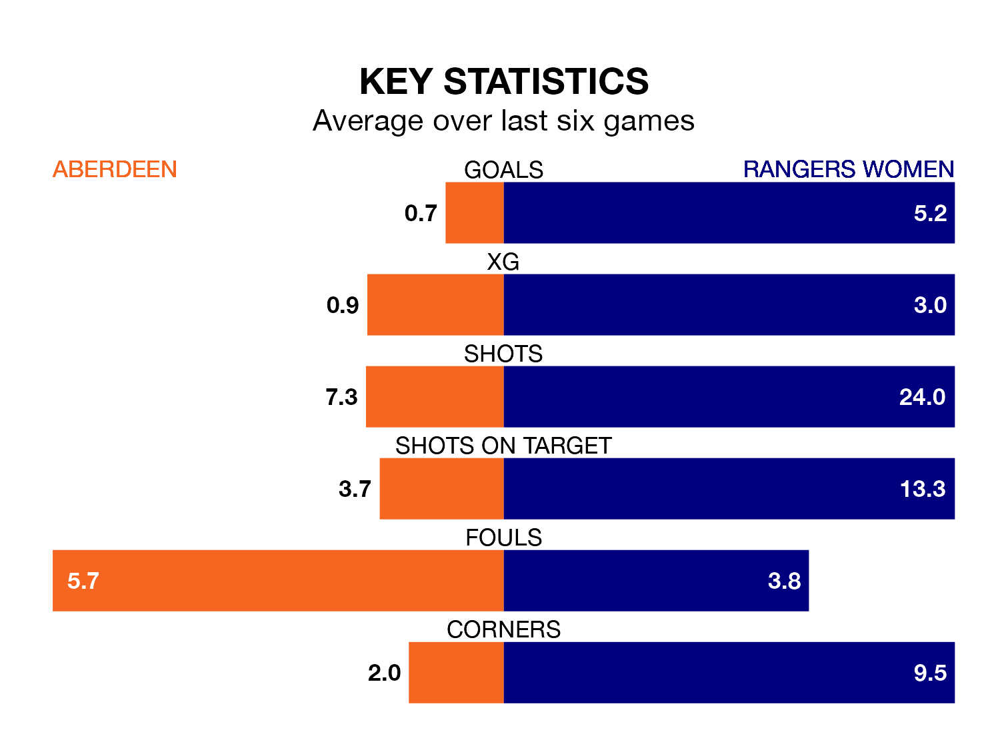

Rangers Women visit Aberdeen at the Balmoral Stadium on early Sunday on the back of 13 consecutive wins in SWPL 1.
It means Rangers have picked up the maximum 39 points from their last 13 games, and they face an Aberdeen side who have lost their last two matches, and collected 13 points from the last possible 39.
Rangers are top of the table after 17 games, of which they have won 16 and drawn one, earning 49 points.
Aberdeen are six places behind the visitors in seventh, with six wins and one draw putting them on 19 points.
With 85 goals in 17 games so far this season, Rangers are the league's second-highest scorers with 5.0 goals per game. And they are conceding fewer than average, letting in eight goals at a rate of 0.5 per game.
The home team, meanwhile, are below average scorers, with 1.5 goals per game, compared to a league average of 2.2. They have conceded 3.2 goals per game.
In Rio Hardy, Rangers have the league's sharpest shooter so far this season. She has notched 18 goals in 16 appearances.
Her goal rate of one every 75 minutes is quicker than that of Bayley Hutchison, Aberdeen's top scorer with a goal every 113 minutes, and a total of 13 goals in 17 games.
In the last 10 years, Aberdeen and Rangers have played each other on seven occasions. Rangers won all of them.
On average, Aberdeen scored 0.6 goals and Rangers 5.1 in those matches.
Their last meeting was on August 20, when Rangers won 5-1 at home.
Aberdeen's last match was on January 14, a 2-0 loss against Partick Thistle Women.
Rangers beat Dundee United Women 10-0 last time out, also on January 14, with Jane Ross (five), Sarah Ewens (two), Brogan Hay, Kirsty MacLean and Mia McAulay on the scoresheet.
Updated: 08:51 (UTC), 25/01/24